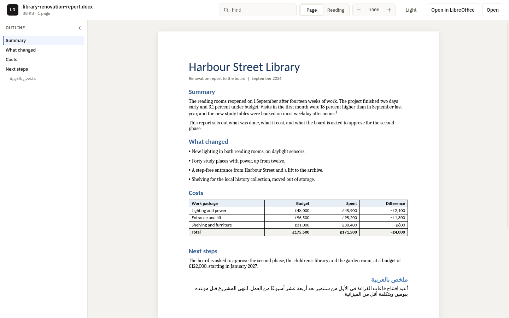
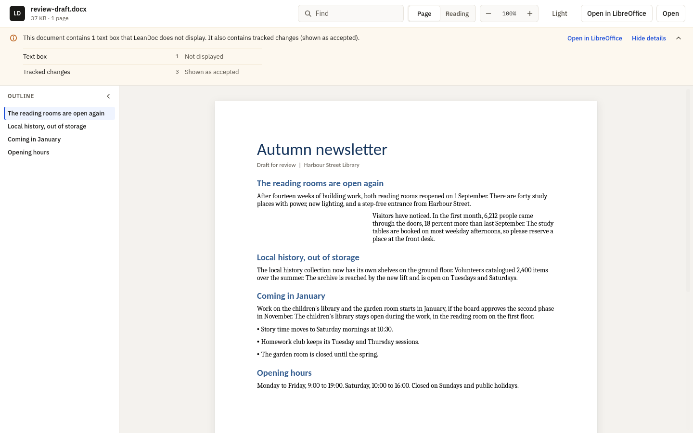

A read-only viewer for Word documents
Read the document, not the office suite.
LeanDoc opens a .docx as pages, never runs anything
inside it, never fetches anything it points to, and has one button
that hands the file to a real editor.
Signing status: the Windows build on GitHub is
unsigned; the Microsoft Store build is signed
by Microsoft. The
macOS preview is ad-hoc signed and not notarized. Every package has
a .sha256 file on the
release page.

Release facts
- 3
- Desktop platforms: Windows, Linux, and a macOS preview
- 547 KiB
- Linux package, measured from the built
.deb - 1 button
- Hands the file to Word, LibreOffice, or your default editor
- MIT
- Free to use, inspect, and improve
Who it is for
A Word document should not need Word.
Windows 11 24H2 removed WordPad, and the Explorer preview for
.docx files needs Microsoft Office. LeanDoc fills that gap
for people who only need to read.
-
01
People without Word
Open the document someone emailed you on a PC without Office. No account, no trial, no office suite.
-
02
People with Word who only want to read
Skip the editor's start-up and ribbon. Read the pages, find a phrase, and switch to Word only when you need to change something.
-
03
People opening attachments they do not trust
LeanDoc has no macro engine and does not fetch remote templates, images, or fields. It reads a cleaned copy, never the original.
The reading workflow
A document opens as a document.
Page view is the default. Reading view reflows the text to the window and is one click away. The page stays on paper colours in every theme.
- Styles, theme fonts and colours, numbering, tables, pictures, headers, footers, and notes
- Arabic and other right-to-left text, lists, and tables
- Navigation pane from the headings, find, zoom from 50 to 300 percent, and copy all text
- Tabs in one window, and reload when the file changes on disk
- System, Light, and Dark themes, with keyboard shortcuts for every action
One button to a real editor
The Open in ... button names the first editor LeanDoc finds:
- 1Microsoft Word
- 2LibreOffice
- 3Pages, on macOS
- 4Your default app for
.docx - 5Word for the web, in your browser
Word for the web cannot receive the file, so LeanDoc says it must be uploaded there.
The fidelity bar
It says what it does not show.
When a document holds content LeanDoc does not display, a quiet bar above the page names it, with counts, and offers the editor. It is never a modal.
- Not displayed yet: charts, SmartArt, most text boxes and shapes, equations LeanDoc cannot draw, OLE objects, and ActiveX controls
- Handled for you: tracked changes shown as accepted, comments hidden, macros not run, remote content not fetched
- A details list with every feature and its count
How close LeanDoc comes to Word is scored on a fixed list of 30 documents with a five-point rubric. The score is not yet recorded.
Read the fidelity list and rubric
Untrusted documents
The reader never sees the original file.
A portable C++ core checks the file and writes a new package with only the parts a page needs. These are facts about LeanDoc's code, not a guarantee about the web runtime the operating system provides.
LeanDoc's own code makes no network requests and has no telemetry, update check, or account. The system web runtime may contact its vendor on its own.
Read the security policy- No macros runLeanDoc has no macro engine, and the macro part never reaches the reader.
- Nothing is fetchedRemote templates, linked images, and include and DDE fields are removed or keep only their saved result.
- A cleaned packageOnly allow-listed parts are copied. ActiveX, OLE payloads, embedded fonts, and imported HTML are left out.
- DTDs refusedAny XML part that declares a document type or an entity is rejected before parsing.
- A bounded ZIPFixed limits on file size, entries, part size, total size, compression ratio, and XML depth.
- Links after a clickWeb and mail links open in your browser or mail app only after you click them. Mail links keep only the address, subject, body, cc, and bcc. Nothing navigates inside the reader.
- A quiet right-click menuThe menu inside the document offers no download or open-link items.
Platform releases
Packages for three desktops.
Every package is attached to the
v0.1.3 release
with a .sha256 file beside it.
| Platform | Package | Runtime and status |
|---|---|---|
| Windows 10 and 11, x64 | LeanDoc-v0.1.3-windows-x64.zip |
Portable. Needs the Microsoft Edge WebView2 Runtime. Unsigned. The optional installer makes LeanDoc the default only for a type that has no default app yet. |
| Ubuntu 24.04 and compatible, x86-64 | LeanDoc-v0.1.3-linux-x86_64.deb |
GTK 4 and WebKitGTK 6.0, resolved by APT. |
| macOS 12 or later, Intel and Apple silicon | LeanDoc-v0.1.3-macos-universal-preview.zip |
Preview. Ad-hoc signed and not notarized. A .metadata.json file records how it was signed. |
Optional Windows installer
It adds LeanDoc to Open With and to Default Apps for .docx, .dotx, .docm, .dotm, .doc, .rtf, and .odt. It makes LeanDoc the default only for a type that has no default app yet. It never changes a default you or your organisation already chose.
Uninstalling removes LeanDoc's files, its Start menu and Open With entries, its WebView2 data folder under %LOCALAPPDATA%\LeanDoc, and restores any default it set.
Microsoft Store
winget install --id 9NSM04BJL6F6 --source msstoreThe Microsoft Store build is signed by Microsoft, so Windows installs it without the SmartScreen warning.
winget
winget install abooodbah.LeanDocPending review in winget; until then, download from Releases.
The Lean family
Small viewers for local files.
LeanDoc is the third read-only viewer in the family. Each one opens a kind of file without the heavy application that usually comes with it, and none of them changes the file.
Privacy
Privacy policy
This program will not transfer any information to other networked systems unless specifically requested by the user or the person installing or operating it.
LeanDoc's own code makes no network requests. It has no telemetry, update check, or account, and it never fetches anything a document points to. A link you click opens in your browser or mail app, and Open Word for the web opens a web page in your browser, only after your click. The page is drawn by a web runtime that is not part of LeanDoc: on Windows, the Microsoft Edge WebView2 Runtime, a Microsoft component installed and updated separately; WebKitGTK on Linux; and WKWebView on macOS. That runtime may contact its vendor on its own, under its vendor's terms.
Uninstall
Remove an installed Windows copy in Settings > Apps > Installed
apps > LeanDoc. Delete the folder of a portable copy. On Linux, run
sudo apt remove leandoc. On macOS, move
LeanDoc.app to the Trash. The
README
lists the settings each one leaves behind.
Built in public
Real documents make it better.
LeanDoc is early, public, and MIT licensed. Reports about documents that look different from Word are welcome. Never attach a private document: make a small file that shows the problem.